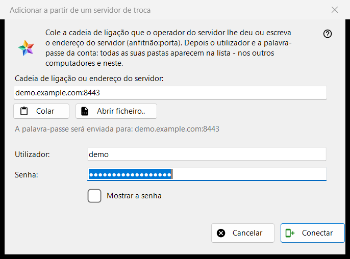
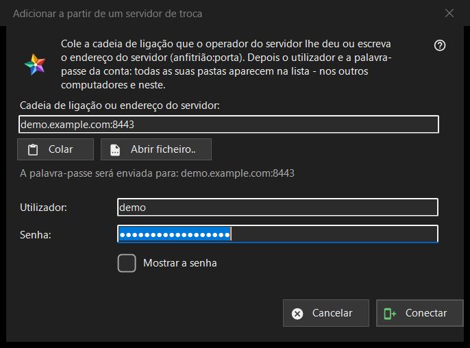

Adicionar a partir de um servidor de troca
Finalidade
Liga este computador a uma conta num servidor de troca, para que as pastas de todos os dispositivos dessa conta apareçam na lista de recursos. Abre-se no botão «Adicionar a partir de um servidor de troca..» da seção «Os meus dispositivos» da lista de recursos, e quando você solta uma cadeia ou um ficheiro de ligação sobre o programa ou digita uma na caixa de pasta.


Nesta ordem
- Cole a cadeia de ligação do operador do servidor, digite o endereço como host:porta ou pressione «Abrir ficheiro..».
- Confira a linha «A palavra-passe será enviada para: ..»: esse endereço é o único lugar para onde vai a palavra-passe.
- Informe o login e a palavra-passe.
- Pressione «Conectar».
- Se o programa perguntar pelo certificado do servidor, compare a impressão digital com a que o operador indicou.
Os elementos
Cadeia de ligação ou endereço
A primeira caixa aceita uma cadeia de ligação (começa por FMSEXCH1:) ou um endereço como host:porta. «Colar» preenche-a a partir da área de transferência, de um texto ou de uma imagem de um código QR, e «Abrir ficheiro..» lê um ficheiro .fmsexch ou uma imagem QR. Colar só preenche o formulário: nada é enviado até você pressionar «Conectar». A linha abaixo da caixa mostra para onde irá a palavra-passe; um endereço da web, um código de pasta ou uma cadeia danificada são recusados ali em palavras simples.
Login e palavra-passe
«Utilizador:» é preenchido a partir da cadeia quando ela traz um. «Senha:» fica oculta; «Mostrar a senha» a revela. Ao pressionar «Conectar», as caixas da palavra-passe são limpas antes de o primeiro byte sair do computador. A linha de estado mostra o andamento e, em caso de falha, o motivo: um login ou uma palavra-passe que não serviram, demasiadas tentativas, um servidor que não responde.
Uma cadeia de convite
Uma cadeia que é um convite já nomeia o servidor e muda a janela para a criação de uma conta: aparecem «Palavra-passe mais uma vez:» e uma nota sobre a regra da palavra-passe (pelo menos 10 caracteres, com uma letra latina maiúscula, uma minúscula e um algarismo), e o botão passa a dizer «Criar a conta». A última palavra sobre a regra é do servidor.
O certificado do servidor
Se o certificado é desconhecido, uma pergunta mostra a sua impressão digital e pergunta se se deve confiar no servidor e lembrá-lo; a resposta padrão é Não. Se a cadeia indica uma impressão digital e o servidor apresenta outra, ambas são mostradas, nada é lembrado e nenhuma palavra-passe é enviada.
Iniciar sessão de novo
Quando a janela é aberta para uma entrada de servidor existente a fim de iniciar sessão de novo, mostra o endereço e o login só para leitura, e a impressão digital que essa entrada lembra é a âncora de confiança.